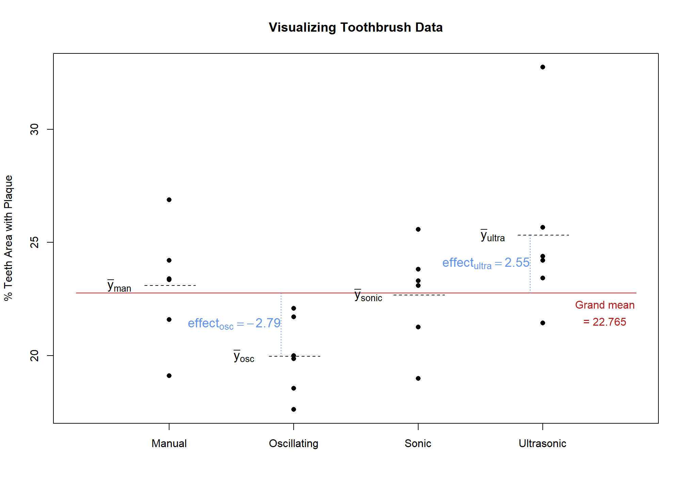

Effects Model
Introduction
Models
In science, statistics, mathematics, etc. we are interested in discovering and describing truth about the world we live in. We can use models to represent a phenomenon or system. The model’s purpose may be to describe and explain something about the way things work and/or to make prediction. An ANOVA model is a model that uses mathematical terms and constructs, in the form of an equation. The ANOVA model quantifies the relationship between factor(s) and a response.
If we were able to observe all items in a population we would be able to quantify with exactness how a factor variable is related to a response variable with an ANOVA model. This “true”, or exact quantification of how the two variables relate is called a parameter. However, with rare exceptions, we cannot observe every item in a population. Instead, we must rely on a sample to calculate estimates of the parameter.
By the end of this section you should know how to interpret the terms in an ANOVA model (i.e. know what they mean), and also perform the calculations necessary to estimate ANOVA model parameters.
Toothbrush Example
Consider an experiment conducted to test 4 different types of toothbrushes: manual, oscillating, sonic and ultrasonic. The response variable is percent of area on teeth that has plaque. Twenty-four individuals participate in the experiment, yielding 6 observations per treatment. We will discuss the creation of an ANOVA model using the context of this specific example. In this section and “Calculating Effect Sizes” section we will be referring to estimates of model parameters using this sample data.
Up to this point we have primarily been interested in calculating means in order to compare toothbrushes. If the mean percent of teeth surface area with plaque was 23.09 for a manual brush, you would not know how that value compares to the other types of brushes.
A graph or table reporting the other sample means would be necessary to provide context. Figure 1 depicts the data points and the mean for each factor level.
In an earlier, introductory statistics class you most likely learned how to use sample means in order to test whether populations means for different groups are equal using analysis of variance (ANOVA). This hypothesis test of multiple population means is valid and works when you only have 1 factor. (The factor is the variable that defines the groups.) However, it is limited in its ability to include more factors or more complicated designs.
There is another metric we use to compare factor levels: the effect size. Reporting the effect of a factor level has the benefit of providing some context on how that factor level is influencing the response variable relative to other levels of the same factor. Using effect sizes (as opposed to factor level means) allows us to model and test much more complicated scenarios than a simple one factor experiment.1
Calculating Effect Sizes
In the case of the toothbrush example, the effect of an ultrasonic toothbrush is estimated by subtracting the grand mean from the mean of ultrasonic brush observations. If the grand mean of the observations was 22.765 and the mean for ultrasonic was 25.313, we get
\[ \text{Effect}_\text{ultra} = \bar{y}_\text{ultra} - \bar{y}_\text{grand} = 25.313 - 22.765 = 2.548 \tag{1}\]
Thus, use of an ultrasonic toothbrush increases the mean percent area with plaque by 2.548 relative to the grand mean. Therefore, the ultrasonic toothbrush’s effectiveness at removing plaque is estimated to be worse than average.
In like manner, the estimated effect size for the other factor levels is calculated
\[ \text{Effect}_\text{manual} = \bar{y}_\text{manual} - \bar{y}_\text{grand} = 23.093 - 22.765 = 0.328 \tag{2}\]
\[ \text{Effect}_\text{oscillating} = \bar{y}_\text{oscillating} - \bar{y}_\text{grand} = 19.977 - 22.765 = -2.788 \tag{3}\]
\[ \text{Effect}_\text{sonic} = \bar{y}_\text{sonic} - \bar{y}_\text{grand} = 22.675 - 22.765 = -0.09 \tag{4}\]
Figure 2 shows a visual representation of effect size for oscillating and ultrasonic brushes. The effect sizes for manual and sonic brushes could also have been drawn, but are omitted so that the chart does not become too cluttered.

The effect size of a factor level can be thought of as the difference between a factor level’s mean and its partial fit2. Or in other words, the difference between what you would predict for a given observation and what you would predict for that same observation without knowing which level of the factor it belongs to.
General rule to calculate effect size
\[ \text{Factor level effect size} = \text{Factor level mean} - \text{sum of effects of all outside factors} \tag{5}\]
Using Equation 5 we can also estimate the effect of the grand mean factor. Grand mean only has 1 level and it includes all the observations, so the factor level mean is the same as the mean of all the observations, 22.765. The “sum of effects of all outside factors” is 0 since there are no factors outside of grand mean. Therefore, the effect size for the grand mean factor is simply the grand mean. In this case, 22.765.
What about factor effects for various levels of residual error? We will show how this is done by working through an example for a specific observation. Let’s consider the observation with a value of 17.62 from the oscillating group. As a reminder, toothbrush type and benchmark are both outside of residual error (see Factor Structure for a review of inside vs. outside factors).

There is only one observation in each box of the residual error factor. Therefore, the factor level mean for this observation is just the observation itself, 17.62. Next, to use the general rule we must find the effects of outside factors: toothbrush type and grand mean. The observation we are interested in belongs to the oscillating toothbrush group; we have already estimated the effect of the oscillating toothbrush to be -2.788. We estimated that the effect of grand mean factor is 22.765. Therefore, the residual error calculation is contained in Equation 6 :
\[ 17.62 - (22.765 + -2.788) = -2.357 \tag{6}\]
This means that this individual’s plaque percent area was 2.357 lower than the average plaque percent area of those who used an oscillating brush. (Less plaque is a good thing!) We cannot tell exactly what caused the residual error. It could be a result of differences in how vigorously people brush, variations in the manufacture of the brushes, differences in how researchers assessed plaque from one person to another and an infinite number of other things. If the experiment implemented randomization properly and was designed and executed well, these residual error effects (i.e. the unexplained error) should behave randomly. In fact, they should behave like a normally distributed random variable…more on that in the Assumptions section.
We will repeat the residual error3 calculation process for the outlying point in the ultrasonic level of toothbrush, which has a percent teeth area with plaque value of 32.74. The first step in applying the general rule is to find the factor level mean. In the residual error factor, each level only contains one observation, so the residual error factor level mean for this observation is just the observation itself, 32.74. The second step is to sum the effects of outside factors: grand mean and toothbrush. The grand mean’s effect is simply the grand mean, 22.765. The effect of toothbrush in this case is 2.548 because the observation belongs to the ultrasonic group. The estimation of the residual error is therefore contained in Equation 7 :
\[ 32.74 - (22.765 + 2.548) = 7.427 \tag{7}\]
These two residual errors are depicted in green in Figure 4.

Hopefully you can see that if you have the effect for each of the factors in the factor structure diagram you can add them together to arrive at an individual observation. The assembly line metaphor that George Cobb4 uses to explain this phenomenon is helpful in understanding how this all fits together.
Assembly Line Metaphor
You can imagine that each data point in your data set is created by going down an assembly line, much like you would find in a factory that makes cars or appliances. All points start with the grand mean value. As it progresses through the assembly line the data point is altered to reflect the effect of the factor levels it belongs to.

In the toothbrush and toothpaste experiment all the points start the assembly line at the same value: the grand mean of the data set. The first station on the line receives the data point and adds or subtracts to it based on the type of brush it is. For example, the value would be added upon if the brush type was “manual” because the mean plaque percentage for the manual type was higher than the grand mean. The next station alters the value depending on which toothpaste was used: off-brand or name brand. After going through each station (one station for each factor) in the assembly line the data point arrives at the last station.
The last station is worked by a person who makes random adjustments! Some adjustments will be big, and some will be small; some will be positive, and some will be negative. (In a typical factory this person would be fired. But we would rather have randomness than unknown, systematic adjustments , i.e. bias). These random adjustments are driven by any/all factors that we did not explicitly measure.
For example, variability in the experimental unit’s diet, hardness of the water used when brushing, the impact of flossing, outside temperature, and the price of rice in China are all factors that were not taken into account. Effects from these and an infinite number of other factors are all lumped into the residual error factor effects. The effects of factors unrelated to the response should be negligible. Effects from other factors that were sufficiently randomized should usually cancel each other out. The point is that all these factor’s effects show up in one (hopefully small) adjustment at the last station and are referred to as “unexplained variance” (review Sources of Variance).
Though the adjustments at this last station for residual error are (assumed) random, they do follow a pattern. Namely, the mean of the adjustments is zero and they follow a normal distribution.
A Formal Model and Notation
It is helpful to recognize that each factor influences, or has an effect on, the response variable. You can combine all these effects to “build” an observation. However, when we get the observation it comes already built. We will need to break it back down into its component parts; like reverse engineering the dataset to be able to explain why each data point is the way that it is.
Taking it a step further, the variance in a set of observations can also be broken down into its component parts. This is called an analysis of variance (ANOVA). Before farther, it will be helpful to create a formal, mathematical model to describe how these factor effects combine to arrive at a single observation. This will be illustrated with just a single observation first.
The fifth observation in the oscillating brush group had a value of 17.62. In Section 2 we used the general rule (Equation 5) to calculate the following effects:
\[ \text{Effect}_\text{grand mean} = 22.765 \]
\[ \text{Effect}_\text{oscillating} = -2.788 \]
\[ \text{Effect}_\text{residual} = -2.357 \]
We can represent this observation as the sum of its factor level effects.
\[ 17.62 = 22.765 + (-2.788) + (-2.357) \tag{8}\]
Figure 5 puts this in context of our factor structure diagram.

Figure 6 shows this same calculation for all the observations. (Effect sizes are rounded to two decimal places).

Note
Notice that the sum of the effects across the treatment factor (toothbrush) equal zero.
\[ 0.33 + -2.79 + -.09 + 2.55 = 0 \]
The sum of all the residual errors within a treatment factor level also equal zero. For example, for the manual brush the summed residuals are:
\[ -3.97 + 1.12 + 3.79 + -1.49 + 0.31 + 0.26 = 0 \]
Because of the way effect size is calculated, this will always be the case, regardless of the number of levels or the number of replicates. This result will continue to hold even as we add more structural factors.
Also take notice of the pattern of repeating values within a factor level. These patterns can help us better understand degrees of freedom.
We can write a general form of the model as:
\[ observation = effect_\text{grand mean} + effect_\text{brush} + effect_\text{residual} \]
Rather than writing “effect” and “observation”, let’s introduce symbols to represent the effects and observations. We will use a different symbol for each factor effect, and we will use y to represent an observation.
- \(\mu\) is the effect for grand mean.
- \(\alpha_i\) refers to the effect of the factor that is varied in the experiment; in our case the factor is toothbrush. The subscript \(i\) indicates which level of the factor the effect is for: \(i=1\) is manual, \(i=2\) is oscillating, \(i=3\) is sonic, \(i=4\) is ultrasonic.
- \(\epsilon_\text{ij}\) is the residual for each observation. The residual term will have a matching subscript for each factor in the study (in this case \(i\)) to indicate which factor level the observation belongs to; plus another subscript to indicate the replicate number within that factor level (or in the case of multiple factors, it is the replicate number within a factor level combination).
- \(y_\text{ij}\) is an observation. Since each observation has a residual, \(y\)’s subscripts will match epsilon’s (\(\epsilon\)) subscript. It will tell us exactly which replicate within a factor level is being referenced.
We can rewrite Equation 8 symbolically:
\[ y_\text{12} = \mu + \alpha_1 + \epsilon_\text{12} \]
Figure 7 shows how this new notation can be used to reference any and all parts of our factor structure.

General form of effects model with one structural factor
\[ y_\text{ij} = \mu + \alpha_i + \epsilon_\text{ij} \tag{9}\]
This is called an effects model (as opposed to a means model) because it shows how each observation is the sum of factor effects. This can be expanded to more complicated designs by adding a term to the model for each factor.5
At this point you should begin to see how the factor structure diagram can help us put together a mathematical model. Each factor in the diagram corresponds to a different term in the mathematical model.
We represent the observations with lower case English letters because they are known values (we observed them!). Greek letters are used to represent unknown, population parameters. The data is used to estimate those parameters. To represent an estimate of the effect we will place a hat on the parameter: \(\hat{\mu}\), \(\hat{\alpha}\), and \(\hat{\epsilon}\). Commonly \(\hat{\epsilon}\) is also expressed as \(e\); we will use these interchangeably in this book. Other books may represent these quantities with different symbols.
You can also see that calculating means is a crucial part of calculating effect estimates. As you already know, a bar is added over \(y\) to represent a mean of observed values. You can use dots in the subscripts of \(\bar{y}\) to indicate which values you are averaging over.
For example, the mean of the observations in the first level of a treatment factor would be represented as \(\bar{y}_{1\cdot}\). The 1 in the subscript indicates the mean only includes values from the first level of the treatment factor, and the dot indicates all the replicates are included. You can think of the “.” as meaning “include all the values of the subscript”. In our toothbrush example, \(\bar{y}_{1\cdot}\) is our estimate of the mean percent area with plaque using a manual toothbrush, because a subscript \(i\) value of 1 corresponds to manual..
\[ \bar{y}_{1\cdot} = \frac{19.12 + 24.21 + 26.88 + 21.6 + 23.4 + 23.35}{6} = 23.09 \tag{10}\]
Similarly, \(\bar{y}_{\cdot\cdot}\) represents an estimate of the grand mean. The dot in the first position indicates we should include all levels of the treatment factor and the second dot indicates we should include all the replicates.
Footnotes
The algebraic form of the cell means model is
\[ y_\text{ij} = \mu_i + \epsilon_\text{ij} \]
Where \(y_\text{ij}\) is an observation, \(\mu_i\) is the mean of factor level \(i\), and \(\epsilon_\text{ij}\) is the residual for each observation. The ANOVA F-test hypothesis for this model is \(H_0: \text{All means are equal to each other}\).↩︎
Partial fit is a term that refers to an estimated model, or estimated prediction, using only some of the factors. Often, in ANOVA, partial fit refers to a model or prediction estimated using just outside factors. Thus, for this model Equation 5 could be restated as Factor level effect size = Factor level mean - partial fit.↩︎
You can think of an effect as a deviation from a mean. Other synonyms for deviation are error and variance. When you calculate an effect, you are also calculating a deviation or error. Thus, residual error effect is a bit redundant. Residual error and residual effect may be used interchangeably.↩︎
Cobb, George. Introduction to Design and Analysis of Experiments. Wiley, 2014. ↩︎
The model for the experiment that includes toothpaste brand and toothbrush type is
\[ y_\text{ijk} = \mu + \alpha_i + \beta_j + (\alpha\beta)_\text{ij} + \epsilon_\text{ijk} \]
Here
\(\alpha\) is the effect of toothbrush, and \(i\) goes from 1 to 4 since there are 4 toothbrush types
\(\beta\) is the effect of toothpaste, and \(j\) is either 1 or 2 since there are 2 levels (Name brand and Generic brand).
\(\alpha\beta)_\text{ij}\) is the interaction term. An interaction is discussed on the BF[2] page.
\(\epsilon\) is the residual error term, and \(k\) is the replicate count within a factor level combination.